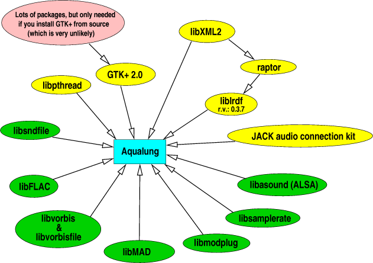

[ Home ] [ Screenshots ] [ Download ] [ Compiling ] [ Usage Tips ] [ Q & A ] [ Misc ]
[ SF Project page ] [ CVS Viewer ] [ Mailing list ] [ Bugtracker ]
Here's how to do it. It can be tough, but if you follow the instructions it shouldn't be a big problem. However, if you have never built packages from source before, this is probably not the time to learn. Aqualung depends on quite a few libraries and installing them the right way before attempting to compile Aqualung is an earnest of success.
This dependency graph shows the software needed to compile Aqualung. Green packages are not necessarily needed (read more about them below) and the pthread library is normally part of your libc, so you should not need to install it by hand. You should not install GTK+ by hand either, as it needs lots of packages and is fairly complicated to build from source. And every distro has packages for it, so why bother. Everything else is quite easy, as you will see.

Aqualung uses the GNU autotools (autoconf, automake, autoheader) and
relies on pkg-config to
gain information about your system and installed libraries needed to
setup a working build environment. So, it is the usual
./configure, make, make install
stuff, with a few specialized points.
| package name | provided functionality | where to get it |
|---|---|---|
| GTK+-2.0 | Graphical user interface | http://www.gtk.org |
| libXML2 | XML parser library | http://xmlsoft.org |
| liblrdf | A library for manipulating RDF files about LADSPA plugins | http://plugin.org.uk/releases/lrdf |
| JACK | JACK Audio Connection Kit | http://jackit.sf.net |
| libasound | ALSA sound library | http://www.alsa-project.org |
| libsndfile | Library to read uncompressed file formats (WAV, AIFF, AU, etc.) | http://www.mega-nerd.com/libsndfile |
| libFLAC | Library to decode FLAC encoded audio files | http://flac.sourceforge.net |
| libvorbis, libvorbisfile | Library to decode Ogg Vorbis audio files | http://www.xiph.org/ogg/vorbis |
| libMAD | Library to decode MPEG Audio files (MP3 and friends) | http://www.underbit.com/products/mad |
| libmodplug | Library to decode MOD files (MOD, S3M, XM, IT, etc.) | http://modplug-xmms.sourceforge.net |
| libsamplerate | Library for high quality Sample Rate Conversion | http://www.mega-nerd.com/SRC |
Part of Aqualung's functionality is optionally built. That means you
can build Aqualung without certain features if you don't need them,
and in such cases you won't need the libraries supporting that
particular functionality either. So let's see what options we have
when configuring. Everything is on (enabled, built) by default, so
only the option to turn it off is showed. In that case, the library in
brackets is not needed. To get a list of all the valid configuration
options, type ./configure --help.
| functionality | how to turn it off |
|---|---|
| support for WAV, AIFF, AU etc. (libsndfile) | --without-sndfile |
| support for FLAC format (libFLAC) | --without-flac |
| support for Ogg Vorbis format (libvorbis & libvorbisfile) | --without-ogg |
| support for MPEG Audio formats (libMAD) | --without-mpeg |
| support for MOD audio files (libmodplug) | --without-mod |
| support for OSS output | --without-oss |
| support for ALSA output (libasound) | --without-alsa |
| support for Sample Rate Converter (libsamplerate) | --without-src |
You can also use the option --with-foo=no instead of
--without-foo. Autoconf is a clever thing.
Note that you can turn off any and all input format support libraries -- naturally, you should not turn them off at once, or the program will be completely useless.
Also note that JACK is not optional. This is because
Aqualung uses the lock-free ringbuffer implementation provided by the
JACK support library for data transfer between threads. Hint: if you
don't need JACK output, you don't need to build a working JACK on your
computer. All you have to achieve is the ability to link to libjack,
which should be satisfied even with a dumbed-down JACK build (disable
all real output drivers in JACK's ./configure, and build
only the dummy output driver).
make install will put the executable, the manpage, the
icons, the default skin and the HTML documentation in the right
places. What the right places are depends on your system, and can be
set manually by using standard ./configure options, most
notably --prefix. If you are not familiar with this,
./configure --help is your friend.
You are strongly encouraged to check out our additional skins from the download page (also, look at the screenshots to decide which ones to get).